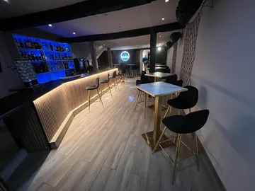
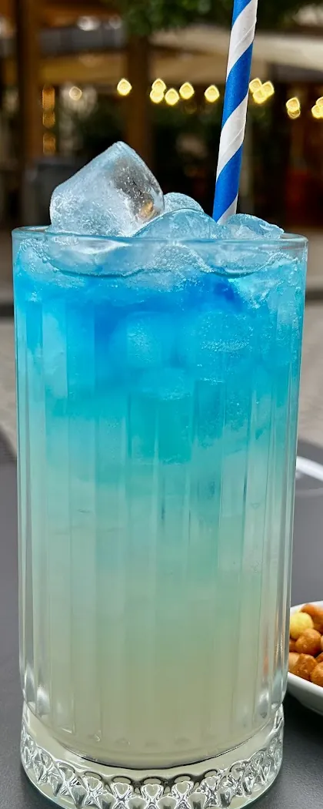
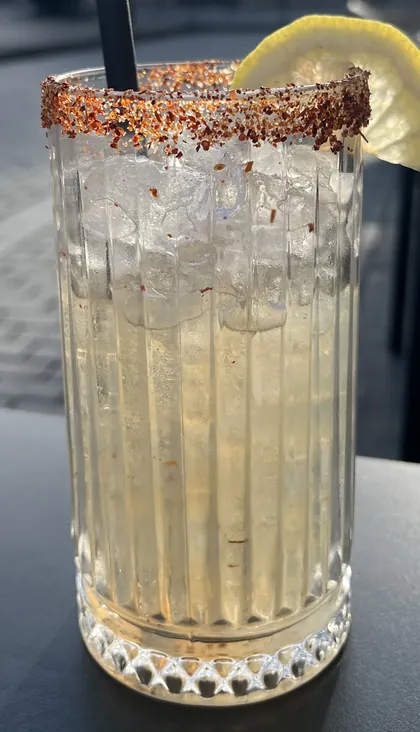
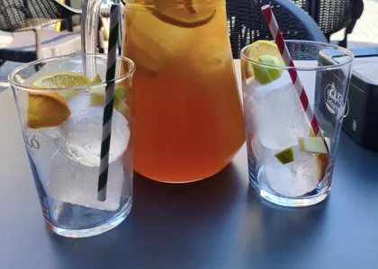
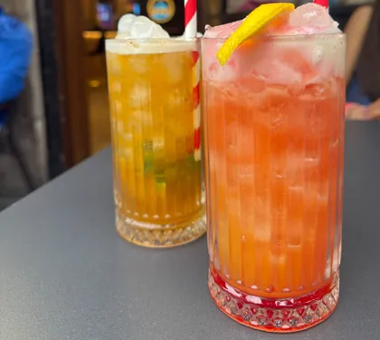
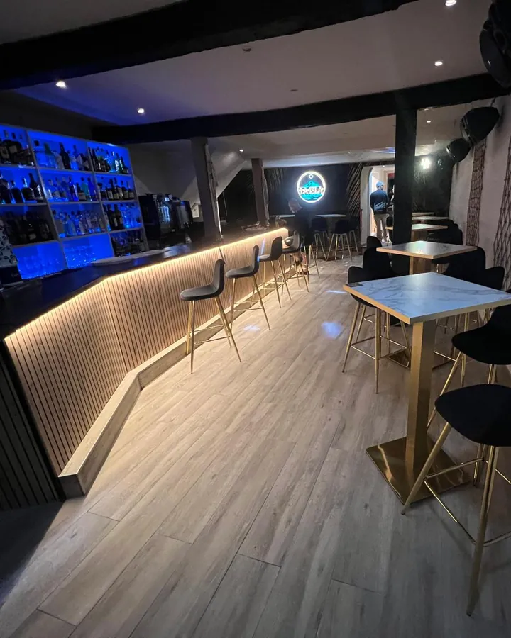
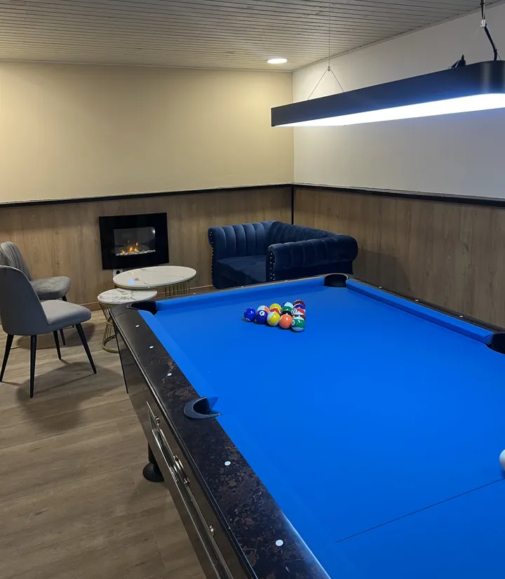
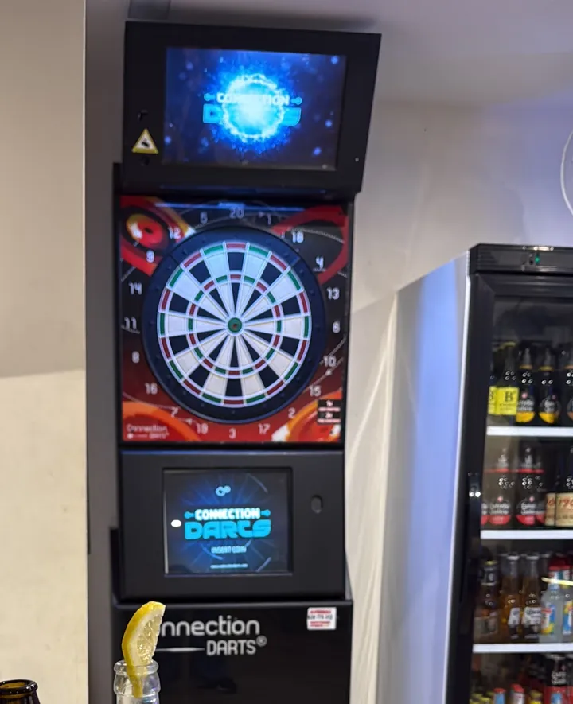
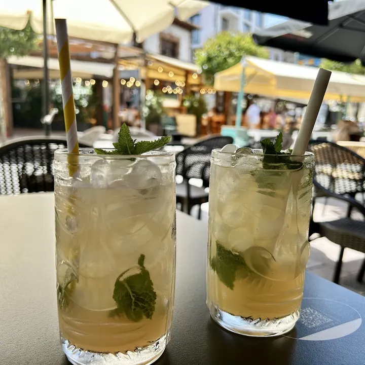
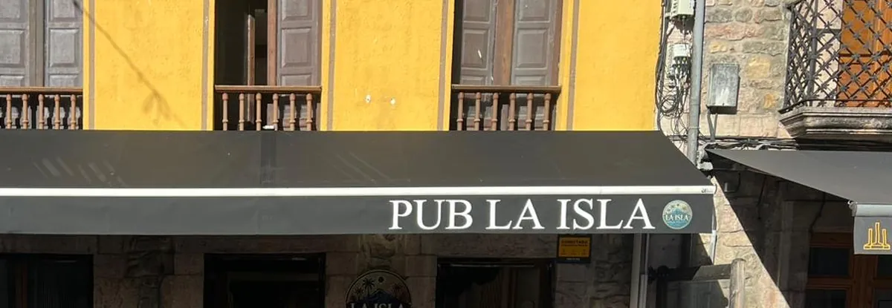

El último plan que hemos anunciado
Tardeo con Dúo Sueños Asturias
Domingo 31 de mayo de 2026, desde las 18:00. Música en vivo en La Isla.
Anunciado en nuestro Instagram
Cócteles hechos en el momento, sangría de sidra casera y billar, en la calle San Pelayo, 12.
4,9★ · 54 reseñas en Google · leídas el 28-10-2026

A partir de las 16:00 Calle San Pelayo, 12 · Cangas de OnísIsla Azul, el cóctel que se llama como la casa
Hechos en el momento, en nuestro vaso de siempre. Esta es la pizarra que sacamos a la acera.
Cócteles
2×14 €
Todos los días
de 13:30 a 16:00
2×14 € todos los días de 13:30 a 16:00
Precio de nuestra pizarra de agosto de 2026. Pregúntanos si sigue en vigor.
Hecha en el momento, en jarra: fresca y distinta. Pregunta por ella en la barra.
La carta completa de cócteles, muy pronto aquí.




La barra, la sala de atrás con el billar, la diana y la terraza en la calle.
Listón de madera con luz, la estantería azul y los taburetes de patas doradas. Aquí se preparan los cócteles, en el momento.

Una mesa de billar azul, el sofá y la chimenea, al fondo del local.

Una diana electrónica para echar la partida mientras llega la ronda.

Mesas en la calle, en el centro de Cangas, para la tarde y para las copas.

Lo que escriben de nosotros, y lo que contestamos. Nota y reseñas leídas el 28-10-2026.
★★★★★
«Preparan una sangría de sidra casera buenísima!!! Perfecta para refrescarte! Nos a gustado el bar para estar de chill a la tarde y a la noche es pub! Buenas música y repito, buen ambiente.»
Reseña de Google, julio de 2026
Respuesta de La Isla
«…la sangria de sidra hecho en el momento es característico del pub dando una bebida refrescando y diferente»
★★★★★
«Es un pub de reciente inauguración que se está haciendo notar a pesar de estar rodeado de sitios similares con mayor antigüedad. El personal es sumamente amable y los cócteles realmente buenos y a muy buenos precios. Personalmente recomiendo el mojito con coco aunque realmente todos están muy buenos y se aprecia su calidad y que son artesanos.»
Reseña de Google, julio de 2026
Respuesta de La Isla
«…nuestros cócteles son característicos del bar»
★★★★★
«un sitio genial, con un trato de 10. […] el cóctel no lo había probado antes y ha sido, sin duda, el mejor que he probado.»
Reseña de Google, septiembre de 2026
Respuesta de La Isla
«…en nuestro pub te hacemos sentir como en casa para que disfrutes un momento agradable con los cócteles artesanales realizados en el momento»
Tardeos con música en vivo, torneos de billar y fiestas de temporada. Estos son los últimos que hemos hecho, con su fecha; los próximos los anunciamos en nuestro Instagram, @pub_laisla.
El último plan que hemos anunciado
Domingo 31 de mayo de 2026, desde las 18:00. Música en vivo en La Isla.
Anunciado en nuestro Instagram
Mayo de 2026
Domingo 3 de mayo de 2026, desde las 18:00.
Anunciado en nuestro Instagram
Febrero de 2026
Sábado 14 de febrero de 2026: DJ local en vivo, cócteles especiales y promociones.
Anunciado en nuestro Instagram
Febrero de 2026
La segunda edición del torneo, con sus finalistas en febrero de 2026.
Anunciado en nuestro Instagram
Diciembre de 2025
Fase de grupos el 15 de diciembre y final el viernes 19. Inscripción, 15 € por jugador; premio, un taco de fibra de carbono profesional.
Cartel publicado en nuestro Instagram
Octubre de 2025
Algunos disfraces de nuestra noche de Halloween.
Publicado en nuestro Instagram
Desliza la tarjeta a un lado para ver la siguiente.
En el centro de Cangas de Onís.

Calle de San Pelayo, 12
33550 Cangas de Onís, Asturias
A partir de las 16:00
El horario que publicamos en Instagram. En festivos y vacaciones puede cambiar: lo avisamos allí.
El mapa es de Google Maps. Al cargarlo, Google puede guardar sus propias cookies.
Abrimos a partir de las 16:00. De lunes a jueves cerramos a las 3:00, y viernes y sábado a las 5:00. El horario del domingo, en nuestro Instagram. En festivos y vacaciones puede cambiar: lo avisamos allí.
Sí. La mesa de billar está en la sala de atrás, junto a la chimenea, y hay una diana electrónica.
Según nuestra pizarra, todos los días de 13:30 a 16:00. Pregúntanos si sigue en vigor antes de venir.
Llámanos al 684 61 36 55 y lo vemos.
Calle San Pelayo, 12, en el centro de Cangas de Onís.
A partir de las 16:00